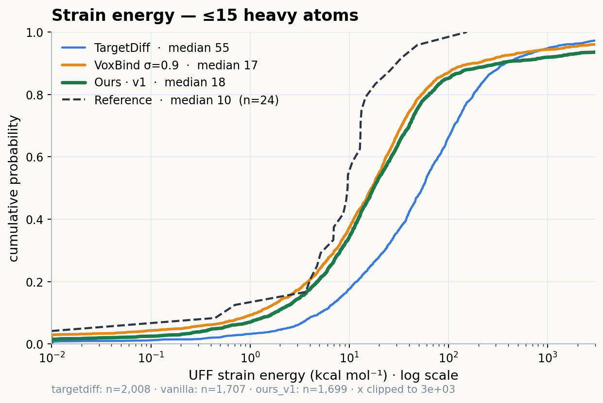
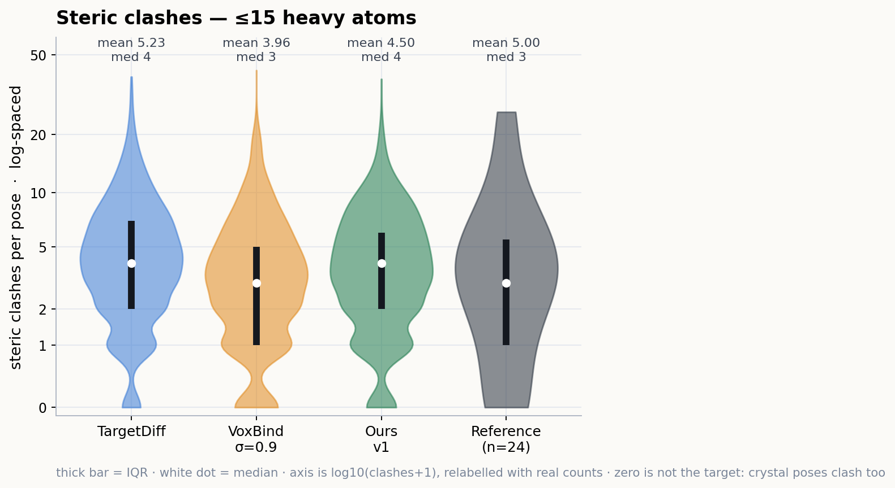
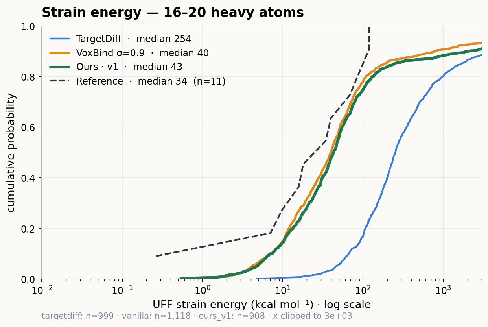
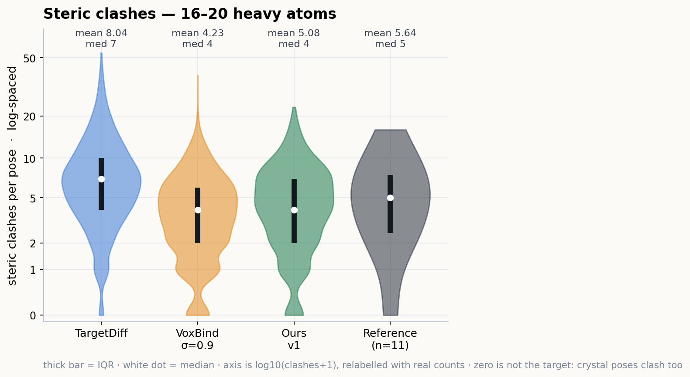
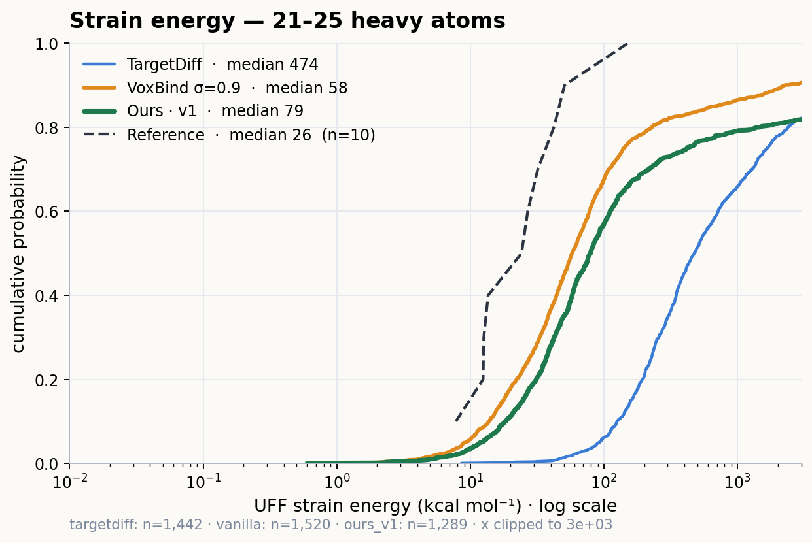
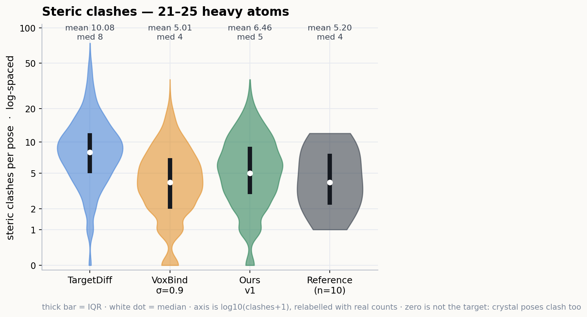
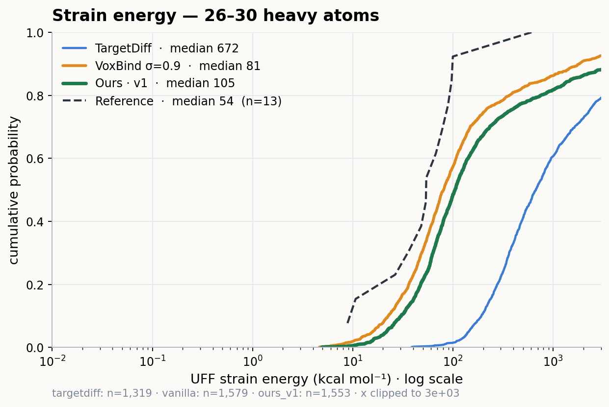
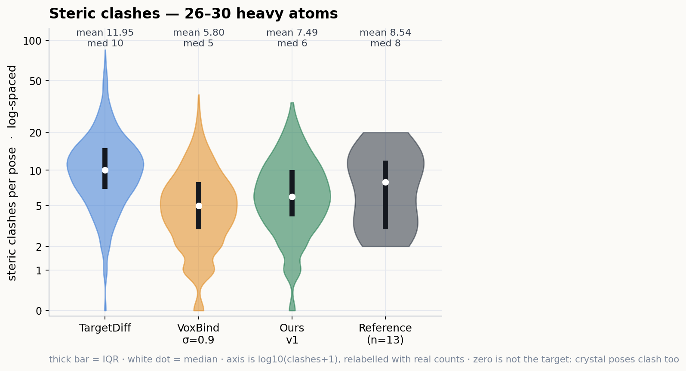
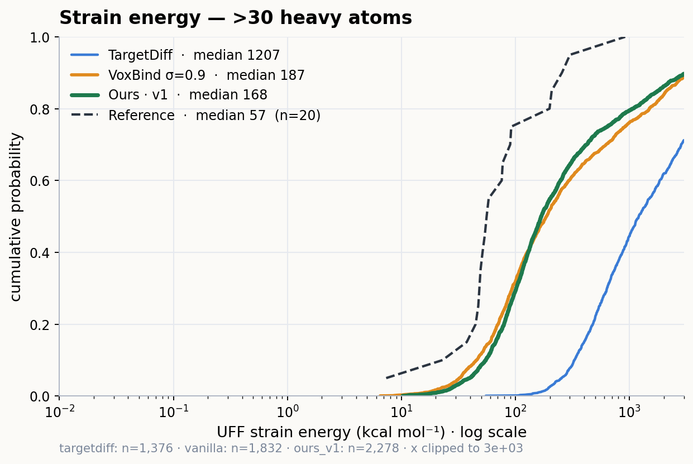
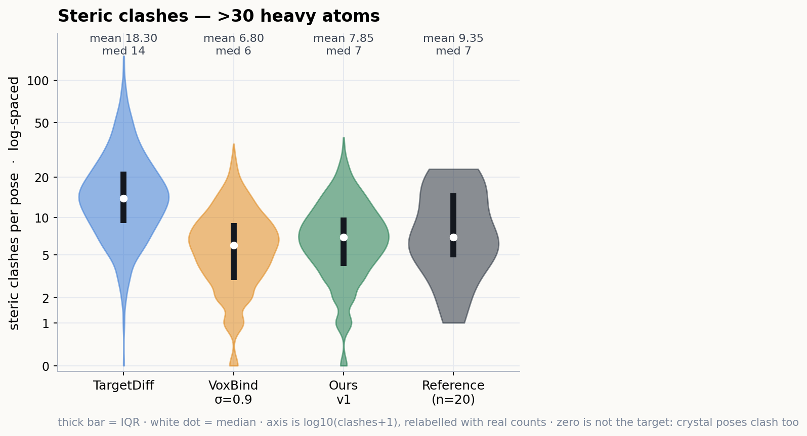

Agenda for the 09-03 meeting. Section 1 collects prior work supporting electron-density representations; Sections 2 and 4 are placeholders; Section 3 is the Vina-evaluation table to be filled as the cross-server SBDD runs land.
Prior work motivating electron density as an input signal — organized into three lines of evidence: (i) density is a complete physical descriptor, (ii) density-informed 3D generation improves drug design, and (iii) density for pure affinity regression, where the evidence is more mixed. Focused on Nature-family journals, PNAS, and ICLR/ICML/NeurIPS.
| Paper | Venue | Summary | Why it backs density |
|---|---|---|---|
| Quantum chemical accuracy from density functional approximations via machine learning Bogojeski, Vogt-Maranto, Tuckerman, Müller, Burke |
Nature Communications2020 · motivation | ML maps a DFT electron density to coupled-cluster energies, reaching <1 kcal/mol (Δ-DFT). Density is the input that carries the accuracy. | The electron density alone is enough to recover chemically-accurate energetics — direct evidence that density encodes the physics coordinates miss. |
| SE(3)-equivariant prediction of molecular wavefunctions and electronic densities Unke, Bogojeski, Gastegger, et al. |
NeurIPS2021 · motivation | Equivariant network predicts full wavefunctions / electron densities directly from structure, transferably across chemical space. | Shows density/wavefunction fields are a learnable, structured target — the same field we feed as an input channel. |
| Informing geometric deep learning with electronic interactions to accelerate quantum chemistry (OrbNet-Equi) Qiao, Welborn, Anandkumar, Manby, Miller |
PNAS2022 · motivation | Molecular representations built from electronic-structure (orbital) features beat plain atomistic ML on energies, dipoles, densities, and orbital energies at ~1000× lower cost. | Electronic/density-derived features consistently lower error vs. geometry-only inputs — the core premise of adding a density channel. |
| Paper | Venue | Summary | Why it backs density |
|---|---|---|---|
| Electron-density-informed effective and reliable de novo molecular design and optimization with ED2Mol | Nature Machine Intelligence2025 · generation | Uses fundamental electron-density information to drive de novo design/optimization; reports a higher generation success rate and >97% physical reliability, surpassing prior methods. | Most on-point: density conditioning directly improves the quality/validity of generated drug-like molecules — our headline claim. |
| Structure-based drug design by denoising voxel grids (VoxBind) Pinheiro et al. |
ICML2024 · generation | Score-based generator over 3D atomic-density voxel grids conditioned on the pocket; strong Vina/quality on CrossDocked. | Our backbone: a density-grid representation is already SOTA-competitive for SBDD; we extend it with experimental electron density. |
| 3D molecule generation by denoising voxel grids (VoxMol) Pinheiro et al. |
NeurIPS2023 · generation | Represents molecules as 3D density grids and generates by voxel denoising (walk-jump); permutation-invariant, constant-time in atom count. | Establishes the density-grid + denoising paradigm at a top venue — the foundation our density channel plugs into. |
| A pocket-based 3D molecule generative model fueled by experimental electron density | Scientific Reports2022 · generation | Pocket-conditioned generator that is explicitly fueled by experimental electron density maps rather than coordinates alone. | Precedent for using experimental (not just computed) density to condition generation — exactly our X-ray/CDG setting. |
Included for honesty: on pure affinity regression the density gain is real but small and context-dependent — consistent with our own matched-control finding (+0.02–0.05 ρ, largest on novel pockets).
| Paper | Venue | Summary | Takeaway for us |
|---|---|---|---|
| Exploring protein–ligand binding affinity prediction with electron density-based geometric deep learning | RSC Advances2024 · affinity | Uses electron-density bond-critical points as a physically-grounded representation; RMSE 1.4–1.8 (PDBbind), 1.0–1.7 (PDE10A) — no clear edge over benchmarks. | Density helps affinity only context-dependently; supports our framing that the generation gain is the stronger story. |
PoseCheck metrics (strain energy, steric clashes, interactions) stratified by molecule heavy-atom count, to see whether density conditioning helps more for small vs. large molecules. Three methods: TargetDiff, vanilla VoxBind and Ours v1. measured
Same 78 CrossDocked pockets used throughout this project. Bins are the doc's original edges, kept because every one holds at least 900 molecules per method. Strain is reported as a median only; clashes are given as mean / median, because for a small-integer count the two differ enough to matter (TargetDiff at >30 atoms: mean 18.30, median 14). The reason for no strain mean: 4–7% of molecules per method fail UFF relaxation and land at 104–1010 kcal mol−1, so a strain mean would report the failure rate instead of the strain. Green marks the best of the three methods in that bin.
| Method | ≤15 | 16–20 | 21–25 | 26–30 | >30 | n (total) |
|---|---|---|---|---|---|---|
| Strain energy — median ↓ | ||||||
| TargetDiff | 54.7 | 253.6 | 473.8 | 672.2 | 1206.9 | 7,144 |
| VoxBind σ=0.9 | 16.8 | 39.8 | 57.7 | 80.6 | 187.1 | 7,756 |
| Ours · v1 | 17.7 | 43.1 | 79.4 | 104.8 | 168.4 | 7,727 |
| Reference ligand | 9.6 | 34.3 | 25.5 | 54.2 | 57.0 | 78 |
| Steric clashes — mean / median ↓ | ||||||
| TargetDiff | 5.23 / 4 | 8.04 / 7 | 10.08 / 8 | 11.95 / 10 | 18.30 / 14 | 7,144 |
| VoxBind σ=0.9 | 3.96 / 3 | 4.23 / 4 | 5.01 / 4 | 5.80 / 5 | 6.80 / 6 | 7,756 |
| Ours · v1 | 4.50 / 4 | 5.08 / 4 | 6.46 / 5 | 7.49 / 6 | 7.85 / 7 | 7,727 |
| Reference ligandmean only (n=10–24/bin) | 5.00 | 5.64 | 5.20 | 8.54 | 9.35 | 78 |
| Molecules per bin | 2008/1707/1699 | 999/1118/908 | 1442/1520/1289 | 1319/1579/1553 | 1376/1832/2278 | TD/van/v1 |
The table above takes one number per bin; these show the distribution the number came from. The clash panels use a log-spaced y axis — fitted as log10(clashes+1) so the 1.6–5.5% of poses with zero clashes stay on the plot — because TargetDiff's tail reaches 148 while the other two sit at 4–8, and a linear axis flattens exactly the range being compared. Reference ligands are the crystal poses of the same pockets, thinly sampled per bin (10–24 molecules), so they mark the floor rather than a comparable series.
≤15heavy atoms — 1,699 molecules from Ours v1, 1,707 from vanilla, 2,008 from TargetDiff


16–20heavy atoms — 908 molecules from Ours v1, 1,118 from vanilla, 999 from TargetDiff


21–25heavy atoms — 1,289 molecules from Ours v1, 1,520 from vanilla, 1,442 from TargetDiff


26–30heavy atoms — 1,553 molecules from Ours v1, 1,579 from vanilla, 1,319 from TargetDiff


>30heavy atoms — 2,278 molecules from Ours v1, 1,832 from vanilla, 1,376 from TargetDiff

30 heavy atoms">
30 heavy atoms">Every PoseCheck number above is scored against the target's
*_pocket10.pdb crop. That is deliberate, and it was checked rather than assumed: all
three methods were re-measured against the whole CrossDocked receptor over the same 78
pockets (234 target-runs, 0 failures).
posecheck/utils/loading.py, get_ids_to_pockets) keys on entry
[0] of each split record — which is the _pocket10.pdb. So
published PoseCheck numbers are crop-scored, and our TargetDiff clash mean of 10.39 reproducing the
~10.8 in the VoxBind paper depends on matching that.Steric clashes, mean per pose — crop → whole receptor, with the shift.
| Method | ≤15 | 16–20 | 21–25 | 26–30 | >30 | All |
|---|---|---|---|---|---|---|
| TargetDiff | 5.23 → 5.64 +0.41 | 8.04 → 8.86 +0.82 | 10.08 → 10.68 +0.60 | 11.95 → 12.85 +0.90 | 18.30 → 19.60 +1.30 | 10.39 → 11.11 +0.72 |
| VoxBind σ=0.9 | 3.96 → 4.15 +0.19 | 4.23 → 4.53 +0.31 | 5.01 → 5.64 +0.62 | 5.80 → 6.92 +1.12 | 6.80 → 9.24 +2.45 | 5.25 → 6.27 +1.02 |
| Ours · v1 | 4.50 → 4.78 +0.28 | 5.08 → 5.30 +0.22 | 6.46 → 7.25 +0.79 | 7.49 → 8.28 +0.79 | 7.85 → 10.12 +2.26 | 6.49 → 7.55 +1.06 |
calculate_strain_energy(mol) takes only
the ligand; the protein never enters it. The small shifts seen between the two runs
(−1.6 to −9.6, i.e. −2 to −3%) are the PoseCheck conformer seed, which
was fixed at 0 for the whole-receptor run and left unseeded in the original — not a receptor effect.Consolidated de novo generation benchmark (CrossDocked) across all methods, pulling the cross-server runs into one Vina-evaluation table. runs in flight
Vina cells read Avg / Med over the test pockets, kcal mol⁻¹ (lower is better); High Affinity = fraction out-docking the reference ligand; QED / SA / Diversity are averages. Fill each cell as the run completes; literature values may be dropped into the top rows for reference.
| Method | Vina Score ↓ | Vina Min ↓ | Vina Dock ↓ | High Affinity ↑ | QED ↑ | SA ↑ | Diversity ↑ | Status | ||||
|---|---|---|---|---|---|---|---|---|---|---|---|---|
| Avg | Med | Avg | Med | Avg | Med | Avg | Med | |||||
| AR | — | — | — | — | — | — | — | — | — | — | — | todo |
| Pocket2Mol | — | — | — | — | — | — | — | — | — | — | — | todo |
| DiffSBDD | — | — | — | — | — | — | — | — | — | — | — | todo |
| TargetDiff | — | — | — | — | — | — | — | — | — | — | — | todo |
| VoxBind | — | — | — | — | — | — | — | — | — | — | — | running |
| FuncBind | — | — | — | — | — | — | — | — | — | — | — | running |
| Ours (C+D+G) | — | — | — | — | — | — | — | — | — | — | — | running |
Score at the generated pose, Min after local minimization,
Dock after full redocking.Fine-tuning the generator / encoder on the MCP set — configuration and outcomes. placeholder
| Run | What changed | Metric | Value | Δ vs base | Status |
|---|---|---|---|---|---|
| Run | — | — | — | — | todo |